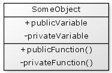

When you are developing your components you will need to think about what data (i.e., variables) you want to "hide" inside your objects, and what functions you want to make available for other objects to use.
Generally your objects should be very protective of the data they contain and, if necessary, provide safe ways for accessing and modifying that data. Data that is protected and hidden in this way is your "private" data. Data and functions that are made available for other objects to use are considered "public".
Inside a component, CFML provides two "scopes" for storing your object variables; the "this" scope and the "variables" scope. The "this" scope is used to declare public variables, and the "variables" scope is used to declare private variables.
Suppose we create a Superhero.cfc
{% highlight cfm %}If we were to create a new Superhero object then we can access and change the "name" attribute directly, but the "dateOfBirth" attribute is protected and cannot be accessed outside the object. For example:
{% highlight cfm %}Functions have an "access" attribute which allows you to assign different levels of access. The two most common access types are "public" and "private":
| public | The typical access level that allows the function to be called from outside the object. |
| private | Hides a function inside an object so that it may only be called by other functions inside the object. You cannot call private functions from outside the object. |
There are two other access types "remote" and "package" that we will only briefly introduce here.
| remote | This is similar to "public" in that it makes a function available to be called from outside the object, but also allows the function to be called via a web service or a URL. |
| protected | Functions with "package" access are not very common. A package access function is one that may be called from any other object within the same folder as the component that declares the function. |
The "access" attribute is optional and if not specified, the function will default to "public" access.
Let's consider an example of public and private functions on our Superhero.cfc component:
{% highlight cfm %}Now, using our Superhero object:
{% highlight cfm %}When you have private data that cannot be accessed directly you may need to provide ways to access and modify that data. The simplest way to achieve this is through the use of "getter" and "setter" functions, which are sometimes called "accessors" and "mutators".
{% highlight cfm %}Again, using our Superhero object:
{% highlight cfm %}
So why have private data at all, why don't we just make everything public?
Let's consider an analogy where you are creating a proposal document to send to a potential client but you need help from your co-workers to provide the information you need. You decide to email it around the office asking each co-worker in turn to add their part and make any corrections, then forward it onto the next person. Once everyone has seen it the last person sends the document back to you.
Chances are the document you get back will be a bit of a mess. There may be lots of jumbled ideas, inconsistent formatting and perhaps the not even the information you were hoping for. Perhaps some of the information you originally added in the document has been replaced with what someone thought was better. You have no idea who added what information and who deleted which parts.
In this example, the document is your data. It is made public and anyone can access it. You have no idea who will access it or in what order or if the changes are even valid.
Let's consider an alternative scenario. This time you make a start on the document but rather than asking your co-workers to add information to it, you ask them to provide you with the information you need. As each person provides you with that information you determine which parts are useful and you update the document yourself.
After this round of changes the document now contains just the information you need and is now both well organised and well formatted.
In this scenario the document is your private data and you represent the object that is permitted to change it. Your co-workers provided lots of information but you filtered out what was not useful (i.e. you performed some validation) and carefully organised the remaining useful information.
Lastly, consider that you while you were working on the document you decided to change the format from a general written document to a slide based presentation. In the first scenario, you would need to advise all of your co-workers that you were using a different format now, and they would all need to add their information to the new presentation document. Some may not know how to modify a presentation document so would need to learn. In the second scenario they would just continue to provide you with information in the same way, but you would update your presentation document yourself. Your co-workers would not need to change they way worked or learn any new skills.
When you have public data any other object can modify that data so it becomes uncontrolled, unpredictable and potentially incorrect. With private data you have functions that provide the only means of changing that data. These functions can perform validation to ensure that the data is reasonable, and if you decide to change the format of the private data then you just need to change the functions that modify that data. Any other objects calling your object's functions typically do not care that these changes have taken place.
This concept of hiding data is called "encapsulation" that we will discuss in more detail later.
UML diagrams support representing public and private component members.

Public variables and public functions are prefixed with a "+".
Private variables and private functions are prefixed with a "-"
When declaring variables within components they may be placed in either the public "this" scope or the private "variables" scope.
As a general guideline, you should never use the "this" scope.
{% highlight cfm %}When you declare a variable in the "this" scope it is made public and code outside the object can modify it. This breaks the concept of having your object protect and manage the variables it contains.
Some developers make an exception to this in order to declare constants within an application:
{% highlight cfm %}However, this requires the creation of one of these objects in each section of code where the constants are required, even if the object itself is not required for any other purpose.
There is a performance factor that must be considered when creating objects in CFML, particuarly if you have an object with many attributes. In Adobe ColdFusion each additional function you add to a component causes additional overhead in creating that object. If you need to create many objects that have contain many functions then the performance of your application will likely be impacted.
There are some solutions to this which may include:
Another option is to change the design of your object so that the number of functions is reduced. If you do have an object with many attributes with getters and setters, then there may be a better design available that reduces the requirement of having all of them.